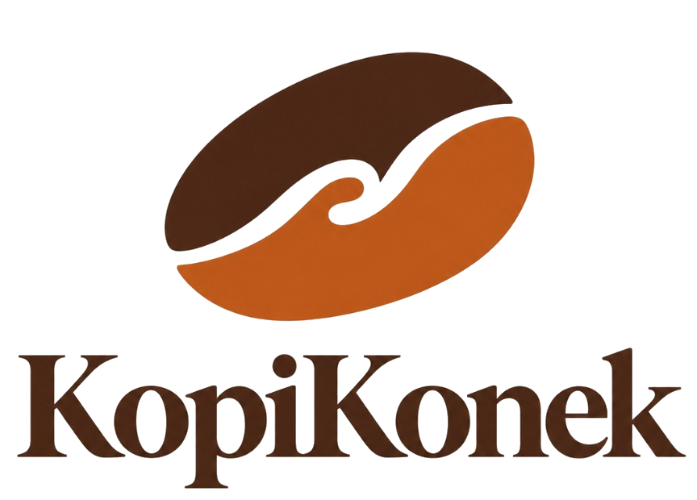

Born from a Passion for Better Beans & Shared Brews.
“It all started when we struggled to find the right beans and brewing guides at the beginning of our coffee journey. Inspired by this challenge, we created KopiKonek a platform designed to help coffee lovers discover the perfect beans and master the art of brewing. KopiKonek also serves as a community hub where fellow brewers can connect and share their coffee making experiences.”

Three Pillars of Our Coffee Journey
Turning the struggle of finding the right beans and brewing guides into an effortless, joyful ritual.
Discover the Perfect Beans
No more guessing how long a bag has been sitting on a supermarket shelf. Every coffee bean on KopiKonek displays a transparent Roast Date, origin altitude, post-harvest process, and visual flavor profile bars for Acidity, Body, and Sweetness.
Master the Art of Brewing
From choosing the right Grind Size (Whole Bean, Coarse French Press, Medium V60, or Fine Espresso) to using our interactive Brew Matchmaker, we help beginners and seasoned baristas dial in every pour with confidence.
Connect & Share Experiences
KopiKonek is more than a marketplace—it is a community hub where home brewers and roasters exchange V60 recipes, water temperatures, pour intervals, and honest tasting notes from across the archipelago.
Fellow Brewers Sharing Their Coffee Experiences
Real recipes, brewing notes, and daily rituals shared by members of the KopiKonek community. Share your own brew log below!